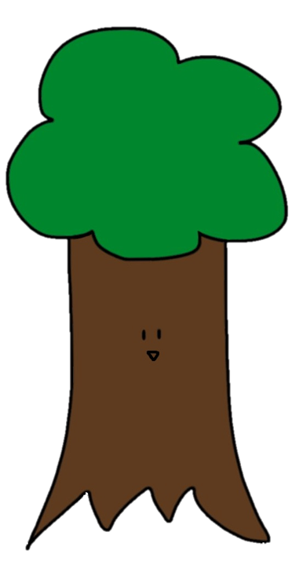
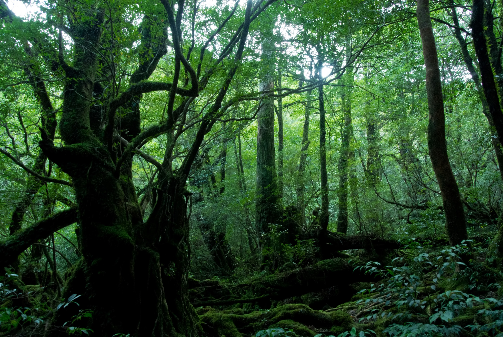
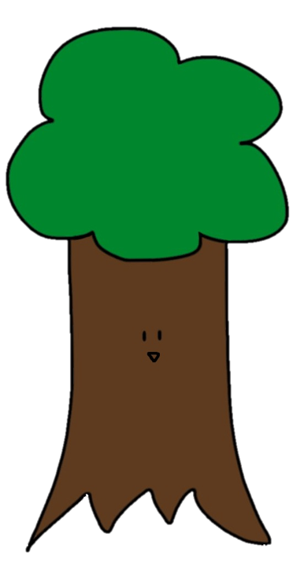
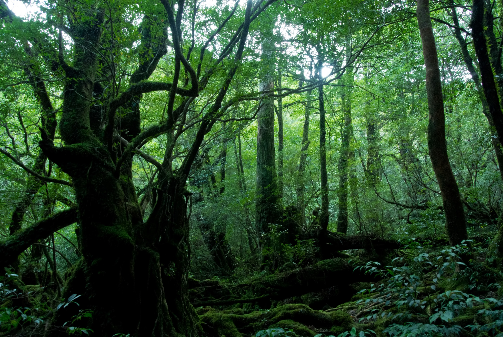

NOW LOADING...
 



ジャック
ジャックの母
この物語はフィクションです。
実在する人物・団体・場所とは一切関係ありません。 これまでのジャックと生きる木 お母さん！ 僕行ってくる！ ジャック……本当に行くの？ うん。このままひっそりと生活していたくないし、 助けを待っている人たちがいるからさ。 そう……じゃあ、このお守りをもっていって。 これはお父さんの形見のお守り。
これを持って、お父さんと一緒に戦ってきて…… うん。それじゃあ……行ってくる………… そうしてジャックは、父のお守りを持ち、森の中を走っていく。 ジャックはまず、母からの助言で、仲間を募ることにした。 そうして集まった仲間というのが…… 僕のことは「生きる木」って呼んで！ 分かったよ……。い……生きる木！ 生きる木という強力な仲間を手にし、ジャックはとても嬉しげにしている。 これから起きる、数々の困難も知らずに……
実在する人物・団体・場所とは一切関係ありません。 これまでのジャックと生きる木 お母さん！ 僕行ってくる！ ジャック……本当に行くの？ うん。このままひっそりと生活していたくないし、 助けを待っている人たちがいるからさ。 そう……じゃあ、このお守りをもっていって。 これはお父さんの形見のお守り。
これを持って、お父さんと一緒に戦ってきて…… うん。それじゃあ……行ってくる………… そうしてジャックは、父のお守りを持ち、森の中を走っていく。 ジャックはまず、母からの助言で、仲間を募ることにした。 そうして集まった仲間というのが…… 僕のことは「生きる木」って呼んで！ 分かったよ……。い……生きる木！ 生きる木という強力な仲間を手にし、ジャックはとても嬉しげにしている。 これから起きる、数々の困難も知らずに……